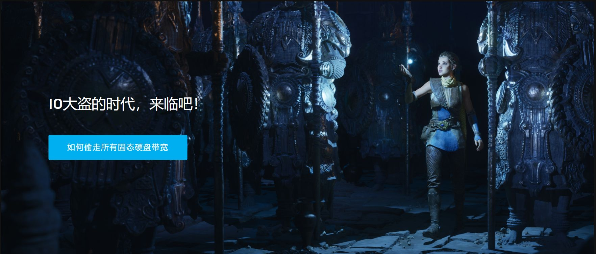
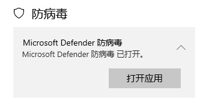
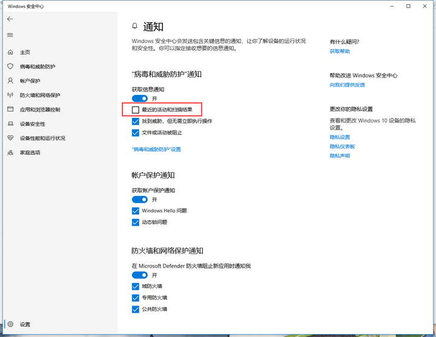
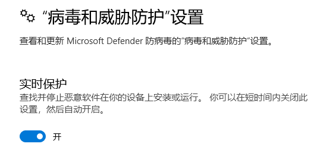
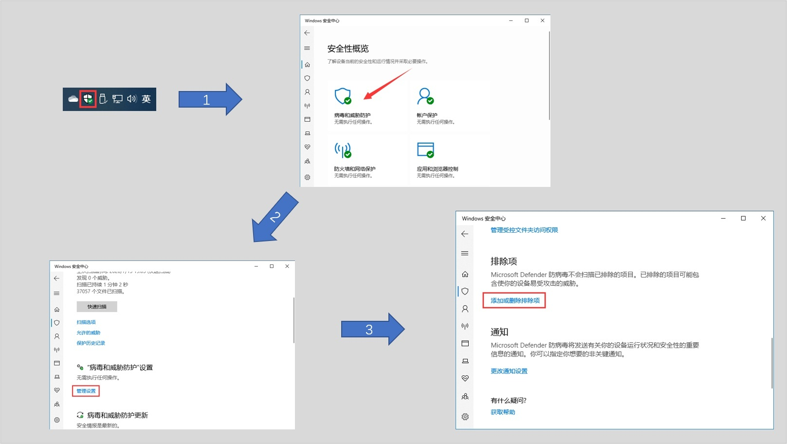

Defender偷IO时在做什么？有没有空？可以来拯救吗？
关键词： Microsoft Defender、开发、优化、小技巧
授权协议：CC BY-NC-SA 3.0，转载请标注来源

本文为解决特定问题而作，且很水，在其他情况下不保证具有技术普适性。
用Windows 10来做游戏开发的朋友们都知道，在涉及到文件编译和创建缓存的时候，总有些应用会抢占引擎或Visual Studio的处理器时间。
如果这个情况发生在笔记本这一类移动设备上时甚至会快速拉高处理器温度，让电脑华丽变身电吹风。
其中 最要命 的要数今天的主角——Microsoft Defender：

Microsoft Defender
Microsoft Defender前身为Windows Defender，是微软改名部的又一力作。以高超的拦截能力和极快的响应速度吊打不少收费杀软。
更重要的是其内置于系统且安静无声，不像某些国产应用恨不得将“此电脑”当作“它的电脑”，一天24小时中有25小时都在通过各类弹窗来宣誓自己对你的计算机拥有主权。

在设置中取消这项选择甚至能让其在你的视线中隐形
但它也有个致命的问题：不仅是偷U小能手，还是个IO断流大坝。因为要检查系统上所有的IO操作来保证安全，所以会极大的减缓IO的响应速度，并顺路带走更多的处理器时间。
它是真正做到了为每一个社畜薅资本家的羊毛，
让每个开发者在工位上找到了摸鱼喝咖啡的时间的革命好伙伴。
但如果你在为自己工作，这行为不亚于断人财路。
撸代码一分钟，编译工程两小时的酸爽，甚至让你会怀疑是不是CPU和硬盘发生了老化。
我们今天就是要来解决这个问题的。
很多人会说：将 “‘病毒和微信防护’设置” 里面的 “实时保护” 关掉或者装个火绒一类的三方杀软不久解决问题了吗？

这当然的不行的，因为一来“实时保护”被关掉后很快就会自动开启，二来为什么要为了解决一个小问题再去装其他软件呢？
再说了系统托盘上的盾牌小图标还会变成一个碍眼的小红叉，极大程度的吸引你的注意力。甚至还会增加设备被入侵的可能性。
可谓好处没有，坏处多多。
现在有些人要问了，有什么好方法来解决问题呢？
这也很简单：将应用、引擎、工程和缓存目录加到白名单（排除项）里面就能高枕无忧。
具体的步骤如下：
- 点击托盘区域的小盾牌打开 Windows 安全中心；
- 单击“病毒和威胁防护”，在打开的页面点击“病毒和威胁防护设置”；
- 滚动滚轮直到看见“排除项”然后点击“添加或删除排除项”；
- 将需要的项目添加进去即可；

操作步骤

截个笔者这边的设置图
之后设备处理效率就会恢复了。
参考
推荐一个神奇的小网站
居然是ac.cn这种内部用域名
本文以CC BY-NC-SA 3.0协议发布，转载请标注来源。
本博客所有文章除特别声明外，均采用 CC BY-NC-SA 3.0 协议 ，转载请注明出处！